網頁是透過伺服器傳送網頁資料給客戶端的，因此網頁的程式及相關檔案都是放在遠端的 網頁伺服器(web server) 中，當有使用者對這個網站提出閱讀或使用的 請求(request) 時，才會開始傳送資料給使用者。
但是開發作業通常不會直接在伺服器上開發，因此我們會在本地端建立一個模擬遠端伺服器的環境，並在本地端確認開發的成果後，再 部署(deploy) 到遠端伺服器去。
工欲善其事，必先利其器，本章節將介紹幾款本課程會使用到的網頁開發工具，協助大家可以更順利的進行開發作業。
Xampp 整合型網頁開發套件
xampp為一個整合型的網頁開發環境套件，裏頭已經先行整合了網頁常用的開發環境需要的設定和套件，包含了 **網頁伺服器(Apache)、資料庫(MySQL)、程式語言(PHP)、資料庫管理軟體(PhpMyAdmin)**，因此推薦給剛入門的新手來安裝使用，省去逐個下載安裝設定的麻煩。
該套件有不同平台的版本，也有虛擬機的版本，長期有專人在更新版本，為本機端開發者常用的整合型套件。
Apache - 目前主流的網頁伺服器，負責所有http及https的請求和回應，同類選擇還有 nginx
MySQL - 目前被Orcale收購，但有社群免費版本，原作者另外開發了全免費的 mariaDB 開放給大眾使用，不過一般人還是會用MySQL來同時稱呼MySQL及mariaDB
phpmyadmin - 可以搭配 MySQL 及 mariaDB 使用的圖形化資料庫管理軟體
PHP - PHP為目前網站後端使用頗多的程式語言，加上歷史悠久，相關的維護及更新需求一直都存在，同類的選擇有C#、Java、Ruby、Python、node.js …etc
1.下載Xampp
首先，直接在瀏灠器上輸入關鍵字 xampp ，即可找到xampp的官網或下載頁面：

進入下載頁面後，請先下載7.0系列的版本，8.0以上的版本因為剛推出沒多久，還有些相容性問題存在，建議等穩定一些再來安裝使用，由於本課程屬於程式設計的基礎，內容適用於各個版本，因此這裏我們選擇的是較為穩定的7.4的版本：

2.執行安裝
使用瀏灠器下載完成後會在左下角顯示下載已完成的提示，點擊左下角的下載檔名稱即可開始安裝，如果是下載後將安裝檔放在別的目錄或磁碟機的，則找到安裝檔後，直接連點安裝檔即可開始安裝。


點擊next按鈕後即可以開始安裝

接著進入安裝細節畫面，由於我們先以PHP網頁設計為目標，因此可以先取消勾選無關的其它套件和軟體，這可以加快安裝的速度，同時也提高開發環境的穩定性。

在解壓縮安裝前，xampp會先跳出一個瀏灠器視窗來宣傳xampp的官網，請先關閉這個視窗或最小化，可以看到安裝畫面在瀏灠器後面，此時再點擊next按鈕後才算真正開始安裝


安裝過程大約三至五分鐘，完成後會跳出安裝完成的訊息畫面，點選finish按鈕來完成安裝並啟動xampp

在啟動視窗中點選Apache項目的start按鈕及MySql的start按鈕，如果兩個都呈現綠燈即表示安裝成功，如果無法正常啟動，則查看錯誤訊息來排除，或重新安裝。


點選admin按鈕會開啟瀏灠器，如果畫面顯示正常，表示Apache運作正常。

如果在啟用Apache和MySQL時跳出防火牆警告，表示電腦是第一次安裝Xampp相關的軟體，請按允許存取來讓這兩個軟體可以通過防火牆來運作.

3、變更網站根目錄
網站的開發一般是以專案為一個單位，反應在電腦中的具體呈現方式就是資料夾目錄，因此我們會習慣一個網站的內容都放在同一個資料夾來保存維護，如果要建立新的網站或新的專案，則會開啟另外的資料夾目錄來存放；但是Apache安裝完成時，預設的網站目錄為c槽下的\xampp\htdocs目錄，如果我們想開啟新的專案或將網站存放在別的位置時，則需要變更Apache管理的網站目錄路徑，這樣Apache才會認識我們自己建立的網站目錄，並且呈現網站內容。
首先，先在電腦中的任何磁碟區位置，建立一個用來存放專案網頁檔的資料夾，這裏以F槽為例，建立了一個web目錄
接著在xampp的控制台視窗 中，點選Apache項目後的config按鈕，在彈出選單中找到Apache(httpd.conf)項目：
預設會以記事本的方式來開啟httpd.conf檔，這個檔案中記錄了所有Apache這個軟體在啟動及運作時會用到的設定值，請按下鍵盤上的Ctrl+F組合鍵來開啟尋找視窗，在輸入框中輸入documentroot來尋找根目錄路徑的設定值：
如下圖；在DocumentRoot及Directory兩個設定項目的後方將原本的C:/xampp/htdocs改成我們在F槽建立的web目錄，改完後記得存檔，並且需要先關閉Apache再開啟才會生效。
重啟Apache後再按下Admin按鈕即可發現瀏灠器呈現的頁面內容和剛安裝時的內容不一樣，此時因為目錄中沒有任何檔案，因此畫面應該會是和下圖一樣：
Visual Studio Code 程式碼編輯整合工具
VS Code為微軟推出的一個免費文字編輯器，因其內建多項對前端開發友善的功能加上內建套件市集，因此在短時間內普及，目前為許多網頁開發者首選的程式碼編輯器。
1.下載Visual Studio Code
首先，直接在瀏灠器上輸入關鍵字 vs code ，即可找到Visual Studio Code的官網或下載頁面：
點選首頁中的Download for Windows按鈕即可啟動下載

下載完成後會在瀏灠器左下方顯示下載完成提示：
2.執行安裝
在下載完成後，直接點擊安裝檔，即可開啟安裝：
在附加的工作項目中，建議勾選以下的項目，在日後的操作上會比較方便一些。
勾選完附加工作後點選下一步按鈕，即可開始安裝，安裝過程非常快，不用一分鐘即可完成。
安裝完成後點選完成按鈕即會開啟Visual Studio Code軟體。

3.基本設定
Visual Studio Code本身已經內建了一些網頁程式設計常用的語法檢測及格式設定等內容，因此需要做的基本設定並不多，再加上VS Code內建軟體市集，有需要任何額外的功能都可以透過市集來完成。
3-1. 安裝中文語系
點選左側的軟體市集圖示，在上方的搜尋框中輸入chinese下方即會出現語系檔，我們選擇繁體來安裝，按下install圖示即可開始安裝。

部份外掛套件需要重啟VS Code才會生效，請關閉VS Code或是點選右下的restart提示訊息，重開後的VS Code即可看到中文繁體的操作界面。

3-2. 設定PHP執行路徑
VS Code已有內建PHP的除錯程式，但除錯工具需要搭配PHP的執行程式才能運作，因此接下來我們需要告知VS Code去那裏找到PHP的執行程式，讓除錯功能可以運作；
從選單項目的檔案中找到喜好設定並在右側選單中找到設定這個項目；

在設定視窗中找到延伸模組中的PHP項目，再找到由上到下數來的第三個設定值PHP．Validate Executable Path，點擊在下方的在settings.json內編輯來開啟設定檔：

找到電腦中的php.exe檔在的位置(預設通常在C:\xampp\php中)，並將完整路徑填寫在php.validate.executablePath之後，要注意的是如果路徑用了倒斜線，則需再加上一條倒斜線才不會解讀錯誤，改完後存檔即完成基本的設定。

之後在撰寫PHP程式時，只要語法上有錯誤存在就會自動在可能發生錯誤的那一行程式下方出現紅色的底線來提示。
4.測試開發環境及工具是否正常運作
4.1 VS Code的開啟方式
開發者工具畫面
VS Code有多種的開啟方式來配合不同的使用情境：
1.拖放式
先開啟VS Code後，將要編輯的專案目錄或單一檔案以滑鼠拖拉進VS Code的視窗，即可開啟該專案目錄或檔案：
2.右鍵選單
在專案目錄或檔案上按下滑鼠右鍵，即可在選單中看到以Code開啟的選項，選擇後即可開啟該專案目錄或檔案：

在專案目錄中的空白處理，沒有選擇任何檔案的狀況下，按下滑鼠右鍵選擇以Code開啟的話則效果等同於開啟整個專案目錄：

4.2 建立第一個PHP網頁檔
點選VS Code左側功能圖示的第一個圖示，會開出一個側邊欄，這裏可以用來瀏灠我們專案目錄中的所有檔案，在目錄名稱的右邊有四個小icon分別代表不同的能，先點選第一個icon來新增檔案：

網站中的第一個檔案都是預設為index做為檔名，因為我們使php來開發，所以請先建立一個index.php檔案：

完成新增檔案後，游標會自動定位到右側的編輯區，請先鍵入以下的程式碼：
1 | <?php |
然後存檔，接著開啟xampp，並啟用Apache：
點選Apache項目中的Admin按鈕，或是在瀏灠器的網址列中輸入 http://localhost ，如果設定都正確，則會看到剛才輸入的 hello world 字樣，至此表示網頁程式設計的開發環境已建置完成

這是因為在部份的電腦系統中，顯示卡的硬體加功能和VS CODE有所衝突造成的，遇到這種狀況，需要關閉VS CODE的硬體加速支援功能。
找到VS CODE設定檔的位置，一般會在
C:\Users\user\.vscode這個目錄下的 argv.json
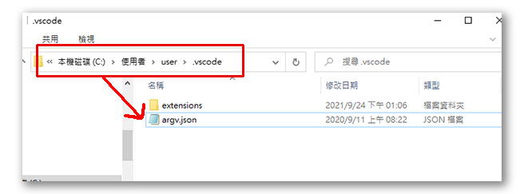
使用記事本或其他純文字編輯器來打開這個檔案
找到// "disable-hardware-acceleration": true,這段文字
把前面的兩個斜線拿掉，就可以關閉硬體加速功能，VS CODE的開啟應該就會正常了
Chrome DevTool - 瀏灠器開發者工具
目前主流的瀏灠器都有提供開發者工具，主要目的在方便網頁開發者可以進行即時的瀏灠和測試。
按下鍵盤上的F12按鍵或是在瀏灠器的頁面區任何地點按下滑鼠右鍵選單中的檢視都可以開啟瀏灠器開發者工具
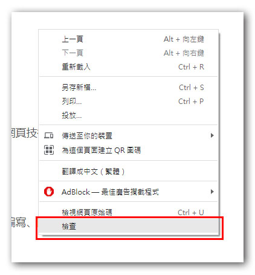
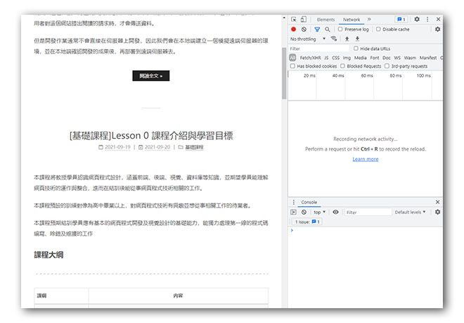
元件檢視
最基本的功能，可以用來檢查網頁中的原始碼是否和預期產出的內容一致。
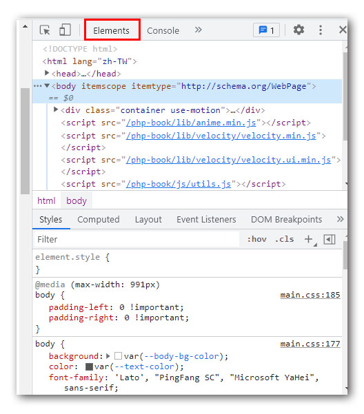
流動版面檢視
透過不同裝置的螢幕大小及方向性，可以檢視網頁程式碼在不同裝置上呈現的狀況。
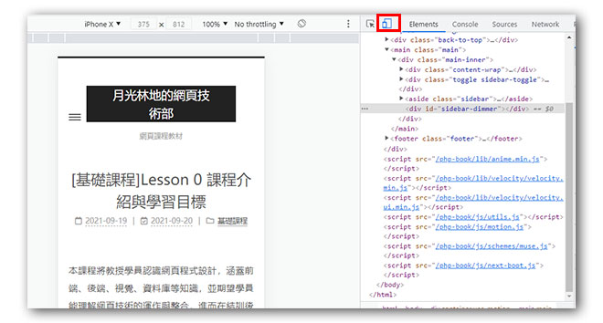
網路監測 - Network
用來監測請求和回應的內容，並可以監控流量和資料狀況。
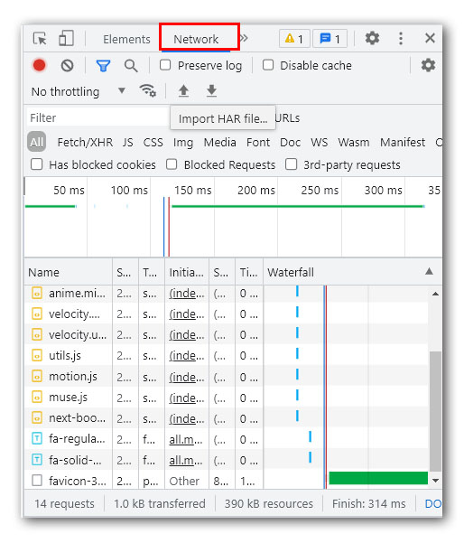
終端機功能 - console
主要是做為 javascript 程式碼在前端的測試或是用來檢視和後端的溝通是否正常
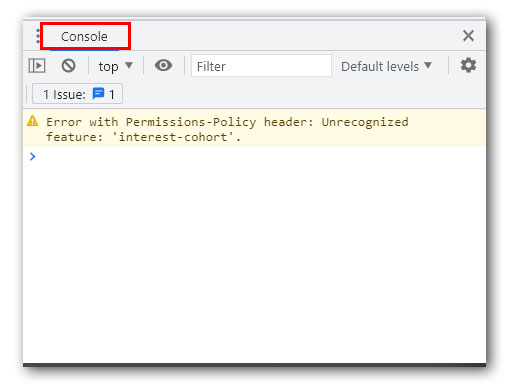
Git - 版本管理工具
git 是繼subversion後最多人使用的版本管理工具，並結合雲端服務衍生許多應用來。
git 本身可以只在單機上執行版本管理的工具，建立起server端的托管倉庫後則又可以提供多人合作開發的應用，使用上非常有彈性。
安裝與設定
- 連上Git官網，依據使用的作業系統(win/mac/linux)平台下載相符的安裝程式

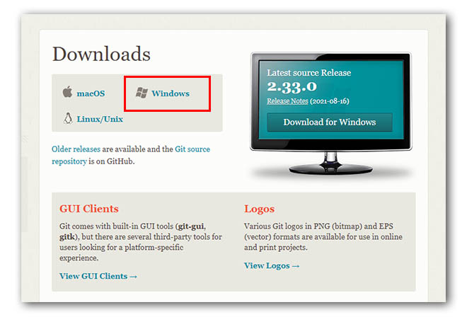
- windows平台的話下載安裝程式後，點擊安裝程式就可以進行安裝，其它平台請見官網說明使用shell指令進行安裝
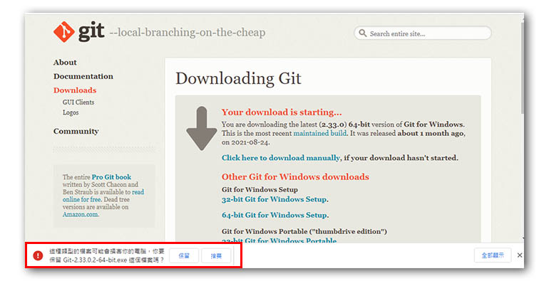
- 開啟終端機程式輸入
git --version如果有看到版本訊息則是安裝成功
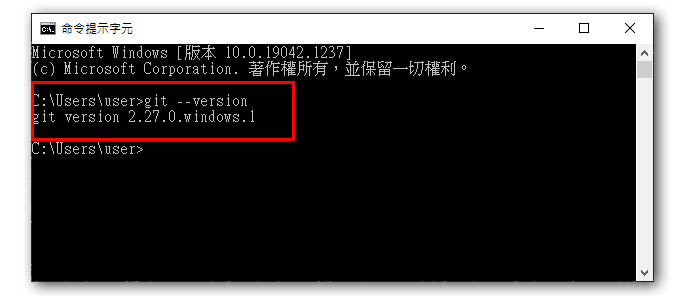
- 部份windows 7或是舊型的電腦及作業系統可能需要重新啟動電腦才能看到版本訊息。
基本操作介紹
- git init - 初始化專案資料夾，只需在建立專案時做一次。
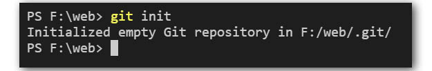
- git add . - 將有變動的檔案加入git的監控中
- git status - 查看目前專案的檔案狀況
- git commit - 將有變動的檔案建立起變動紀錄
- git log - 查看專案的版本紀錄
- git config - 進行設定
Github - 遠端程式碼托管倉庫
github 是一個以git為基礎的雲端程式碼托管服務，目前已被微軟收購，並開放個人使用者可以使用全部的功能，只對企業用戶有收費。
github 目前也漸漸成為軟體工程師的一種社交平台，許多軟體職位會要求應試者附上github的帳號，藉此了解求職者的技術能力及程式碼經營能力。
申請帳號
- 連線至github官網
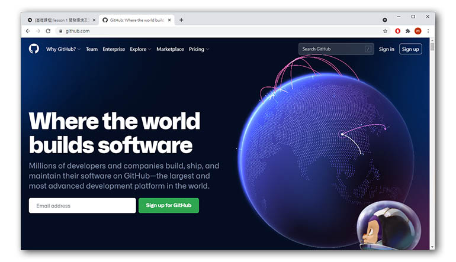
- 註冊新帳號
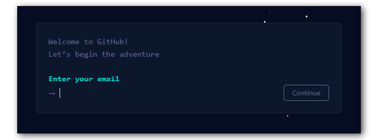
- 登入帳號
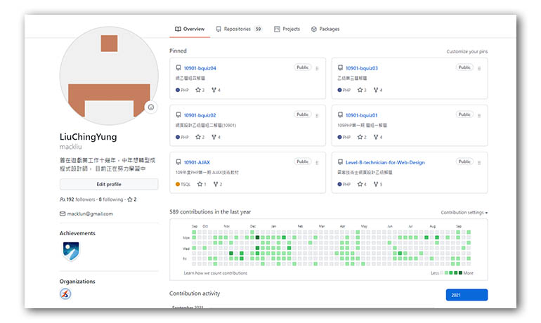
建立倉庫
- 操作github提供的功能來建立一個雲端倉庫
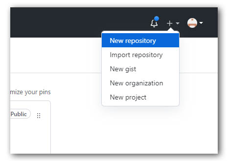
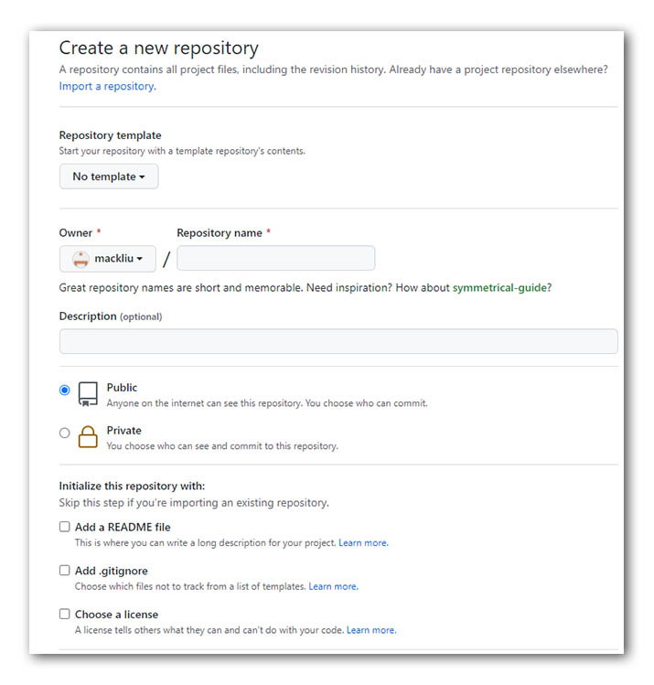
與本地專案連結
- git remote add name https://github.com/youraccount/repo.git
程式碼推送
- git pull name master - 把專案從遠端的倉庫拉回來
- git push name master - 把專案推送到遠端的倉庫去
其它相關設定
xampp的預設編輯器修改
Xampp預設使用windows內建的記事本做為編輯器，但某些設定檔在記事本中沒有斷行，使用上不是很方便，因此我們可以修改預設編輯器，指定其它編輯器來替代
在Xampp control Panel中選擇最右側功能按鈕中的config按鈕
畫面跳出設定畫面，其中第一個項目就是預設編輯器的設定，填入替代的編輯器執行路徑即可

VS Code 預設路徑為 C:\Users\user\AppData\Local\Programs\Microsoft VS Code\Code.exe
資料庫帳號密碼變更
在Xampp安裝完成時，預設的資料庫是沒有密碼的，在學習和單機開發階段，為了方便，通常會保持無密碼的狀態，但如果要正式上線或對外公開時，則需要設定密碼，以防任何人都可以連入資料庫進行存取。
這裏我們透過phpmyadmin來進行資料庫帳號密碼的修改，首先在Xampp control panel中的MySQL模組中按下admin項目按鈕或是在瀏灠器的網址列鍵入http://localhost/phpmyadmin，即可連上Phpmyadmin

在php的首頁上點選使用者帳號項目，即可看到MySQL的使用者帳號；
點選root帳號的編輯權限功能即可修改密碼


Phpmyadmin登入密碼修改
由於Phpmyadmin只是一個MySQL的輔助管理工具，因此Phpmyadmin需要有MySQL的帳號密碼才能連線使用，資料庫的預設密碼被修改後，Phpmyadmin就無法連線進資料庫進行管理作業，因此需要一併修改phpmyadmin的連線設定，才能正常使用。
在Xampp control panel中的Apache模組中，選擇config按鈕，並執行 phpMyAdmin(config.inc.php) 項目，即會開啟phpmyadmin的設定檔，

找到其中 / *Authentication type and info ***/** 的認證設定區塊，可以看到phpmyadmin的預設認證方式是透過 config 檔來連線資料庫的，因此必須在 config 檔中先提供資料庫的帳號密碼給phpmyadmin。

在下方的設定項目中的[‘password’]中填入你資料庫的密碼，存檔後再次連線MySQL或是在網址鍵入http://localhost/phpmyadmin，即可重新連入資料庫
1 |
|
PHP
在初學階段，Xampp預設的PHP環境己經足夠使用，所以不太需要再做什麼設定上的修改，以下提供幾項常見的設定供學員了解：
PHP的設定檔名為php.ini，一樣可以在Apache的config按鈕中找到。
短標籤
原本PHP的語法需要包在<?php......?>區塊中才能被執行，短標籤的作用是讓區塊語法可以縮短成<?.....?>，大多數的虛擬空間都有開啟短標籤的設定，但是要小心和其它類似語法衝突。
1 | short_open_tag=On |
時區設定
在php.ini中進行時區設定的話，則全伺服器都會共用這個設定，因此在設定時要先確認網站要服務的地區為何；
1 | [Date] |
上傳檔案大小限制
原本的PHP設定限制上傳單一檔案的大小為2mb，不過目前Xampp預設的上傳限制已經調升到40mb了，足夠一般的使用；
1 | upload_max_filesize=40M |